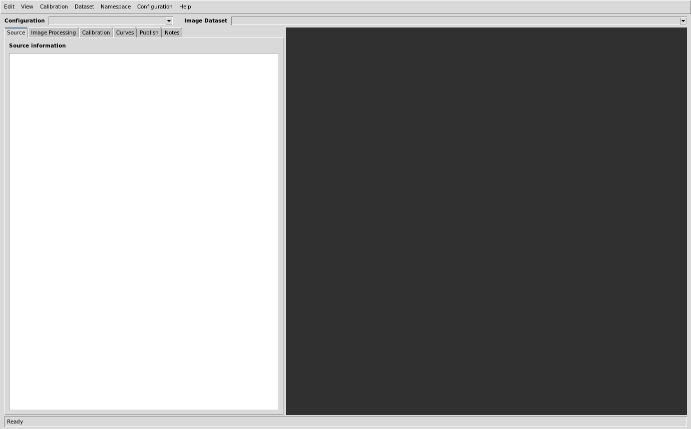
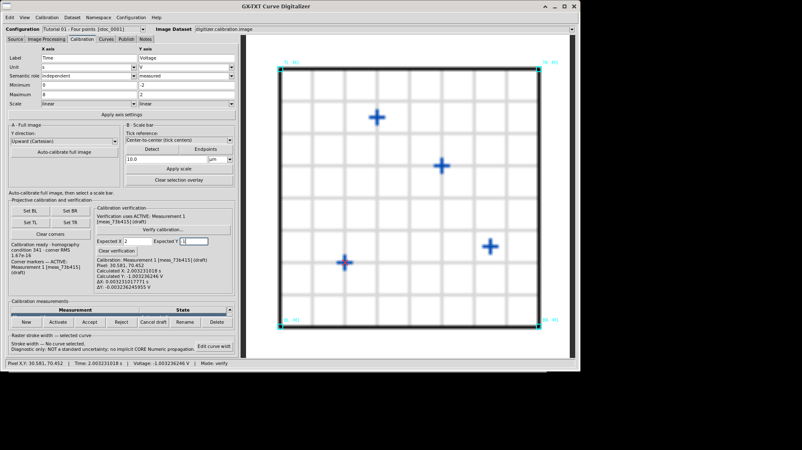
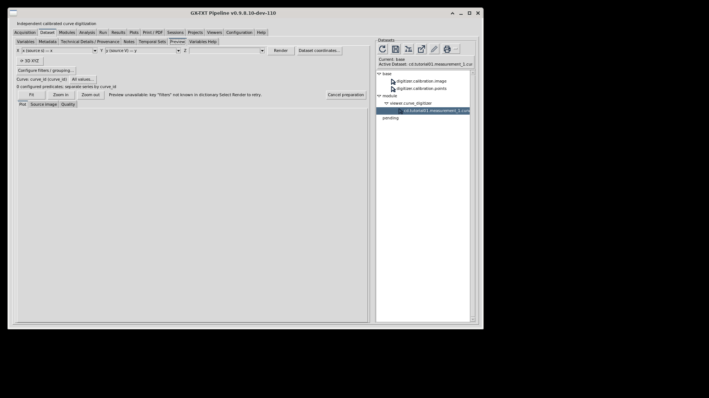

1. Start with a normal Session
- Open the intended GX-TXT Session. For a tutorial, create a fresh Session through a registered generator in the normal Generate Session workflow.
- Use ordinary Acquisition to import a legitimate source image, unless the generator already supplied a canonical Image Dataset.
- Open Viewers → Curve Digitalizer. The viewer requires the configured Python/Tk/NumPy/Pillow runtime. Resolve a reported runtime issue through the normal framework Runtime configuration.
- Create/select a Digitizer configuration and explicitly select the intended Image Dataset. Inspect its identity and source information before measuring.
For a tutorial entry with generator metadata, the shared Guides host can offer Open Generate Session…. It selects the exact installed library/generator pair in the normal dialog; it does not install, enable or execute a generator. Choose an unused Session name/Location and explicitly press the ordinary Generate control. To retain the generator's own Experiment documentation, leave Copy previous Experiment documentation off for this exercise.
The unchanged vendor Help → Curve Digitalizer user guide… / F1 command remains its original bundled-manual action. Do not assume that it opens this new HTML guide: an existing host bridge is under owner assessment. The explicit common Help-tab route above is separate. If native HTML is unavailable, preserve access to the original Markdown guide and the actual reported reason.
2. Find the controls without losing the canvas


The compact header contains Configuration and Image Dataset. The left workspace has Source, Image Processing, Calibration, Curves, Publish and Notes. The canvas occupies the remaining area; the bottom status reports actual state/errors.
| Menu | Use it for |
|---|---|
| Edit | Undo/Redo, curve actions and selected-point editing. |
| View | Fit and workspace navigation; point numbers, saved scale overlay and calibration-corner display. |
| Calibration | Full-image calibration, scale-bar operations and calibration verification/reset. |
| Dataset | Catalog refresh and publication actions subject to their source/calibration checks. |
| Namespace | The Dataset namespace picker; a filter, not a source replacement. |
| Configuration | New/Rename/Duplicate/Delete, Viewer settings and the normal shared module editor. |
| Help | The vendor's bundled user guide/F1 and About. |
Fit shows the relevant image; wheel zoom and middle/right-button dragging navigate the canvas. Long left-hand content and the curve list have their own scrolling. Keep the pointer over the intended list/panel when scrolling. Canvas movement does not alter original raster coordinates.
Scientific point insertion/movement/deletion is guarded by the active Curves tab. Image Processing comparison is read-only; Calibration has its explicit corner, scale and verification actions. A Delete shortcut in another tab must not be interpreted as editing curve data.
3. Choose the actual image, not a similar label
The Source information pane displays available Dataset identity, format/media type, dimensions and optional acquisition/document metadata. Missing optional metadata stays missing. A filename or display label is not proof of identical pixels.
Namespace → Select Dataset namespace… filters compatible image choices to the chosen organizational namespace and descendants; All namespaces broadens the list. These groups are distinct from directories and Session Workspaces. Filtering does not move Datasets or rebind an existing configuration, even when its source is hidden by the filter.
Use normal catalog refresh when available images change. The configured revision watcher updates choices; it does not authorize reusing old calibration on new bytes. Retain a stale/missing-source diagnostic and the existing configuration. Deliberately create an appropriate new configuration for another image rather than silently substituting it.
4. Keep configurations and published results distinct
A Digitizer configuration is the authoritative Session Interactive Document for a source and its scientific work: axes/calibrations, curves, ordered points, relevant appearance/order settings, publication targets and notes.
- New creates a configuration; its source is associated only after deliberate selection/confirmation.
- Rename changes its readable name while retaining its stable identity.
- Duplicate copies state into an independent configuration with a new identity.
- Delete requires confirmation and removes that configuration's persisted state; published Datasets are not silently deleted.
Several configurations can share an image while measuring different regions or using different calibrations. Changing a calibrated configuration to an unrelated source is blocked. Use an explicit new/duplicate/reset procedure appropriate to the source, preserving the old work.
Save and reopen the intended Session/configuration through normal controls. Reopening a published Dataset consults its retained result; it does not load mutable work by guessing a configuration name. Switching Sessions changes ownership context: never carry stale source/calibration state into another Session. For persistence evidence, close/reopen the actual Viewer after the supported host Open Session action where required and select its saved configuration; a surviving old canvas is not fresh readback. In-process Session Open is distinct from a cold application restart.
5. Calibrate scientific axes deliberately
For each axis define its label, unit, semantic role, minimum/maximum and linear/log scale. A semantic role is scientific meaning, not a deduction from the display label. Preserve unrecognized unit text explicitly; a label alone does not establish a valid conversion.
- Identify a trustworthy rectangle/quadrilateral in the source with known axis values.
- Enter the X/Y definitions and interleave each single-click action: Set BL → click, Set BR → click, Set TL → click, Set TR → click. Each Set arms one corner click; the next corner is not armed automatically. Verify using the intended active realization, then select its row for Accept.
- Inspect the selected geometry and mapping. Coincident/degenerate corners or an invalid domain must be corrected, not bypassed.
- Verify another trustworthy location before accepting the calibration for publication.
A four-point projective mapping addresses the selected planar geometry. It does not correct arbitrary scanning/lens distortion. A logarithmic scientific axis requires a strictly positive domain and a source actually plotted on that scale. Do not reinterpret a linear plot as log merely to make values fit a desired shape.
Reference example: the independent 100 × 100 tutorial raster uses BL (10,90), BR (90,90), TL (10,10), TR (90,10), linear X 0…8 s and Y −2…2 V. Its declared equations are x=(pixel_x−10)/10 and y=(50−pixel_y)/20. These equations describe that source, not every calibration.
6. Full-image pixels and physical scale bars
Full-image calibration uses original pixel-center coordinates: a W × H raster spans 0…W−1 and 0…H−1. Choose the intended image-downward or Cartesian-upward Y direction. Pixels alone do not establish a physical length.
For a physical scale bar, inspect the detected candidate or deliberately select both endpoints in the original raster. Supply the known positive physical length and unit, then explicitly apply the scale. The Euclidean endpoint distance and declared length determine a uniform factor; a rotated bar is not measured by horizontal projection alone.
Choose the source producer's actual center/inner/outer tick convention. Center-to-center is a documented geometric default, not evidence about a microscope's exporter. Preserve an unspecified historical convention as unknown. Inspect the overlay before applying; a high-contrast annotation can be the wrong object.
Clear selection overlay hides the saved visual reference without resetting physical calibration. Reset physical scale… is a separate deliberate action with confirmation. Changing a preference for future detections does not retroactively rescale an accepted measurement.
7. Verify and manage calibration measurements
Use Verify calibration on a trustworthy location independent of the fitted corners. Enter expected scientific values as requested and inspect the actual residuals. The temporary marker is a diagnostic; clear it or use the documented escape action without changing the mapping.
A tiny residual at the same four fitted controls does not independently establish accuracy. Repeated manual mappings can show descriptive variation while sharing the same source and systematic effects.
| Action / identity | Meaning |
|---|---|
| New | Start a new realization with the documented retained axes while keeping curve raster points. |
| Activate | Change the working mapping and recalculate scientific coordinates; raster points/curve identities stay unchanged. |
| Accept / Reject | Record scientific suitability; rejection retains the realization and its data. |
| Cancel draft / Delete | Deliberate removal/discard with confirmation and the requirement to retain at least one realization. |
| Rename | Change the label, not its immutable measurement identity. |
| Measurement ID / group ID / transform fingerprint | Different identities: two measurements can share the same mathematical mapping fingerprint. |
Merely selecting a table row does not activate it. Verification uses the active mapping. Publication uses the deliberately selected accepted measurement set, which may differ from the active one.
8. Curves and real numerical families
In Curves, use New curve, Edit, Delete and Show/Hide. The table reports the curve, family value and point count. Stable curve identity is distinct from its editable label. Hiding a curve changes presentation, not its published scientific rows.
Keep independent curves independent unless a real numerical family parameter exists. For a numerical family define the parameter's scientific meaning, unit and applicable semantic role, then assign each curve its deliberate numeric value. A name such as “curve two” does not establish a family quantity.
When publishing, independent mode and numerical-family mode have distinct supported contracts. Use the actual public schema to identify grouping and coordinate variables; do not infer them from a fixed column position or display label.
9. Add, correct and order scientific points
The current Point interaction modes are Add, Move, Delete, Add guide, Edit proposal and Add correction point. Select the intended mode in Curves before interacting with the canvas. Point numbers and selected-point details help you identify the actual object.
Optional Snap to dark searches the configured radius around an input. Inspect the snapped/stored position and original intent. A dark candidate can belong to another trace, grid or label. Radius is a search setting, not an uncertainty estimate.
Open Configuration → Viewer settings… → Digitizing. Monotonicity offers None, Monotonic in X and Monotonic in Y; Point ordering source offers Insertion order, Sort by X and Sort by Y. Selecting a monotonic axis selects its matching sort. Changing to an incompatible ordering clears monotonicity. Press the bottom Apply and inspect the saved status before closing: unapplied selections are not persisted. These scientific choices belong to the current configuration, not shared User/Session defaults. Sorts are stable, so equal coordinates retain their previous relative order. Publication orders separately under every selected calibration. Sorting X does not establish monotonic Y or correct branch identification.
Preserve insertion order for loops/nonmonotonic curves when that describes the traversal. Sort by X or Sort by Y is an explicit configuration policy, not a universal improvement; sorting can change a meaningful path. Each published calibration realization uses its actual scientific coordinates under the selected policy.
Edit → Undo / Redo and Ctrl+Z / Ctrl+Y follow the current chronological history, including scientific edits, exclusion edits and proposal corrections. Undo followed by a new edit clears the redo branch. Selecting, panning or zooming is not an edit. Do not assume history survives switching to another configuration or Session.
10. Review an assisted proposal before accepting it
- Choose the intended curve and place ordered guides along its route.
- Set Corridor (px), Step (px), Trace image (auto/original/processed) and a deliberate Smooth curve prior: Off, Gentle or Strong.
- Choose Propose. Inspect crossings, gaps, faint portions and branch choices against the source; a low-cost smooth path is not proof of the intended science.
- Move a guide, edit the proposal or add a correction point to the intended unaccepted segment. Use the current context/segment selection rather than editing another curve accidentally.
- Accept a reviewed segment or the remaining proposal. Set Output points (Accept) deliberately; review actual counts and shared guide identities.
- Use Resample accepted only for the accepted set it actually affects. Reject/clear temporary work deliberately and preserve accepted manual points.
Output points (Accept) accepts 0 to retain proposal sampling, or 2…10000. A positive N is the number of newly assisted scientific points for that acceptance, not total curve size including manual/unrelated points. Accept segment applies N to that selected interval; Accept across selected/remaining intervals applies N to that acceptance, accounting for shared guide junctions. There must be enough points to retain the selected guides.
If changing density after partial acceptance, use Resample accepted before accepting another interval. It distributes N across exactly this live proposal’s already accepted intervals and replaces their accepted points, including direct edits to points in that batch. Manual points and unrelated batches remain. Read the confirmation; Undo restores the replaced scientific batch. Transient proposal/accepted-segment bookkeeping is not promised after a configuration or Session switch.
Smoothness is a search preference, not a physical model or an uncertainty. Strong prior can suppress genuine corners/discontinuities; Off preserves the documented legacy choice. A changed enabled exclusion or prior makes an existing proposal stale: regenerate before acceptance.
The current Exclusion paths (red X) panel has New path, Edit X, Delete X, Remove path, Clear all paths, global Enable exclusions and Exclusion width (px). Select a path row to edit it; click its On cell to enable/disable it. Selection alone does not toggle its contribution. Disabled geometry remains visible as a muted overlay.
Exclusions are per-curve, source-bound soft penalties, not hard barriers. Legitimate intersections can cross them. The source bounds are 16 paths per curve and 200 nodes per path. Current history uses ordinary Edit Undo/Redo; historical Path # and separate Undo X/Redo X instructions do not describe the current 2.0.9 controls.
Changing exclusion geometry does not rewrite already accepted scientific points. After an unrelated source change, do not apply stale paths; deliberately clear/reset source-bound geometry as appropriate.
11. Measure descriptive raster stroke width
Select the intended curve and open Stroke width…. Its editor is collapsed initially; measurement is off by default and belongs to each curve separately. Changing selected curve must update that curve's enablement, method, probe radius and status.
- Automatic: enable Measure this curve, choose automatic and Auto detect. At least three accepted points are required. The method samples the original raster along normals and reports available width/probe summaries. Inspect accepted/rejected coverage; overlap, edges and weak contrast can make a measurement unavailable.
- Manual: choose manual, select Boundary A/B and Edit boundary, then place matching handles along the two visible stroke edges. Use corresponding extent/direction and Measure two boundaries. Cyan/lime square handles are distinct from red exclusions and orange guides.
- Correction: Delete last node, Clear boundaries and Reset measurement are deliberate reversible edits. Reset unrelated source-bound measurements rather than treating stale data as zero.
Probe radius, tracing corridor, snapping radius, exclusion width, measured ink width and statistical standard uncertainty are different quantities. Width is descriptive geometry. It does not populate pixel sigma, propagate covariance or authorize fitting weights automatically.
12. Compare processing without changing original geometry
Image Processing uses the configured ImageMagick runtime. With it unavailable, processing/processed-image publication are unavailable; that is not a reason to alter the acquisition or vendor module.
Enable intended filters and record their exact values and order: channel, grayscale, denoise, auto levels, contrast stretch, brightness/contrast, gamma, local contrast, sharpening, inversion and thresholding have different effects. Disabled operations retain settings but do not participate. Standard uses its fixed order; Advanced retains the explicit sequence/repeated steps. Switching to Standard deliberately changes ordering.
Live preview is debounced; manual Apply processing / Preview remains available. Reset filters clears the recipe. Try automatic enhancement is a conservative heuristic suggestion, not guaranteed scientific improvement; inspect it and use the documented restore action while on the same source/configuration if needed.
Compare original and processed images shows original left and processed right with a movable divider. Navigate each viewport independently, or deliberately Synchronize pan and zoom around the same original coordinate. Optional curve overlays are read-only. Processing/tab changes do not insert, move or delete curve points.
The stream preserves raster geometry/dimensions but starts from decoded RGB and publishes RGB PNG; it is not preservation of higher-bit-depth acquisition channels. Enhancement can shift apparent edges despite unchanged coordinate geometry. Keep the original acquisition and inspect it before measuring.
Publish image.raster Dataset… explicitly creates a separate canonical processed image with its own ID, bytes and parent/recipe lineage. It does not publish a curve. Use a new configuration if deliberately measuring that new image as a source. Numerical curve publication remains a separate action.
13. Preferences, configuration settings and notes
Viewer settings groups Display, Digitizing, Calibration, Axes & output, Dataset browser and Configurations. Shared User defaults/Session overrides use the normal CORE configuration service; scientific axes, points, source bindings and publication targets remain configuration-owned.
Apply validates and saves the documented changes while retaining the dialog; OK closes after successful saving; Cancel abandons pending edits. A previous successful Apply is already committed. Preserve actual errors/conflicts rather than overwriting a stale shared draft privately.
Background and image opacity are per-configuration appearance, with relevant shared defaults for new work. They do not change source pixels/scientific coordinates; overlays retain their intended visibility. Verification marker size/width/color affect the temporary X, not calibration accuracy.
Use Notes for scientific context. After typing, leave the editor through an ordinary tab/control and inspect the focus-out save/error status. On publication, nonempty configuration notes are appended to Dataset Notes without erasing existing text or duplicating the same section. Changed notes retain earlier published context. Notes are distinct from structured metadata and a short Dataset description. A Dataset can be published while a subsequent notes update fails; retain both outcomes.
14. Declare uncertainty only with a justified model
The publication uncertainty dialog saves a scientific declaration, not a visual preference. No numeric values are silently supplied. Missing, unknown and explicitly justified zero inputs are different states.
| Mode | Meaning |
|---|---|
| none | No invented uncertainty estimate from resolution, snapping, line width or Quality. |
| pixel_calibration | Two pixel inputs with explicit rectangular full-width or normal-standard interpretation, plus twelve calibration input standard uncertainties and evidence. |
| physical_override | Explicit independent X/Y standard uncertainties in physical units replacing the pixel/calibration model, with rationale. |
For rectangular full width w, standard uncertainty is w/√12; normal input is already its standard uncertainty. A physical scale bar does not acquire a valid length/tick-error model from generic homography-corner perturbations. The documented scale-bar case rejects nonzero corner uncertainties; use an appropriate justified supported model.
Apply and save the declaration explicitly. Changing source, scientific points or calibration invalidates review. Separate accepted calibrations are evaluated for their own output; enabled uncertainty with a combined multi-realization Dataset is explicitly refused because it needs a further cross-realization model.
Shared calibration can correlate points. Marginal sigmas are not automatically independent weights. CORE Numeric/Statistical Semantics owns propagation and fit eligibility; no epsilon substitution or private solver replaces a refusal. Documented limits include 4096 rows per uncertainty-enabled Dataset, 1 MiB compressed factors and 512 rows for full covariance materialization.
15. Publish the actual selected scientific result
- Confirm the correct source/configuration, scientific axes/units, point order and reviewed curve set.
- Select the accepted calibration measurements to publish; do not confuse the working active mapping with this output selection.
- Choose independent curves or a genuine numerical family, and Separate or Combined layout as supported.
- Review the base Dataset ID, naming template and actual name preview/collision state.
- Publish through the normal action, inspect each actual outcome, then select the exact new canonical Dataset in the Dataset Browser.
Separate layout creates an output per selected calibration. Combined layout retains distinct calibration identities alongside curve/point identities; consumers must separate them correctly. Repeated calibrated rows are not independent new clicks.
Documented naming tokens include [name], [calibration], [calibration_id], [configuration], [index] and [mode]. Inspect the actual preview. A readable label does not grant ownership of an existing Dataset; do not replace a foreign result to make publication succeed.
Publication retains source/calibration lineage, semantic coordinate/grouping roles, original raster positions and scientific order. Resolve actual variable roles through public contracts instead of assuming stored column names.
Atomicity is per Dataset. If several outputs are requested and a later one fails, an earlier committed output may remain valid. Inspect the exact per-output outcome before retrying. A separate notes-stage error is not a rollback of already published scientific data.
16. Read Quality with its limits
Quality describes the published digitization and bounded image/structure observations. Inspect report availability, total/returned segment/issue counts, truncation/sampling and actual curve/calibration locations. No retained record does not mean no error.
Contrast does not distinguish the intended trace from every grid, label or overlap. Calibration spread and same-control residuals are descriptive diagnostics, not independently measured physical accuracy. Current vendor Quality documents accuracy/uncertainty as not assessed; the separate uncertainty contract governs a declared model.
Direct unchanged-vendor Quality integrity/digest fields do not establish current-byte verification. CORE's separate source observation retains its own status, expected/observed identity, owner/method, preparation time and reason. A previous render is not continuous verification of later bytes.
17. Inspect the genuine published Dataset in Preview
- Select the actual Digitizer-produced Dataset in the Dataset Browser and open Preview. A generator's analytical input table or an offline PNG is a different object.
- Use the supported physical X/Y variables and retain their units. Configure filtering/grouping/order deliberately; do not connect the end of one curve/calibration to another.
- For supported Digitizer publications, Family/Curve/Calibration shortcuts resolve their real roles. Curve labels retain stable identity; a missing numerical family must not acquire an invented Family selector.
- Use Render / Plot and Open / scientific consultation as provided by the actual compatible Preview. Inspect Show/Hide, Fit, zoom/pan, axes and Dataset switching without rewriting canonical rows.
- Inspect Source image and Quality where available, including actual source identity, original-raster overlays, calibration grouping and limitations.
A table page is bounded consultation, not all scientific input for fitting/publication. Original source-row identity, declared types/units and grouping remain important even when only a subset is displayed. Viewport reduction, display units and Fit do not alter canonical values.
Raster overlays can de-duplicate original curve/point identities across calibrations. Scientific plots must preserve the distinct calibrated rows. Choose a verified geometry-preserving processed image deliberately; unavailable/mismatching sources retain an explicit refusal and original-source recovery rather than a guessed replacement.
Quality/source information and cached representations retain their observation epoch. A Previous render message qualifies a retained frame after source or pending-setting change; use the actual explicit Render action for the current view. Cache cleanup must not be described as deleting the canonical source.
Controls and actual capabilities must be confirmed in the installed compatible provider. The final tutorial evidence must show the real Digitizer publication and its actual Preview, including identities/units/order; this review draft supplies no fabricated render or performance result.
18. Diagnose without losing the original work
| Symptom | Approach |
|---|---|
| No compatible image visible | Check Session, namespace filter, canonical image format and catalog refresh; do not rebind a hidden source by label. |
| Missing/stale source | Retain the configuration, inspect the actual identity/reason, recover the correct original or deliberately create new work. |
| Invalid corners/log domain | Correct geometry or scientifically inappropriate scale. Do not suppress validation. |
| Wrong proposed branch | Reject/review the temporary proposal; adjust guides/corrections/prior/exclusions and regenerate before acceptance. |
| Width unavailable/stale | Inspect source/trace and coverage; reset deliberately for an unrelated source. Do not treat missing width as zero sigma. |
| Processing unavailable | Check configured runtime/current recipe and actual error while preserving the original image and calibration. |
| Uncertainty review invalidated or model refused | Review changed inputs and supported CORE model; preserve correlations and actual refusal, without private fallback. |
| Publication partly successful | Inspect each Dataset and notes outcome before retrying; preserve valid earlier outputs. |
| Guide/tutorial/generator unavailable | Use the explicit common Guides route and actual installed package/catalog state. Missing generator pairs need deliberate normal manager/selection actions, not silent fallback. |
A recorded recovery example: publication succeeded, Preview did not
In the actual allocated TUTORIAL1 packet003, normal generation, manual calibration, four-point acquisition and publication produced cd.tutorial01.measurement_1.curves in staged dev110 with unchanged Digitizer2.0.9. Configuration idoc_0001 and accepted calibration meas_73b415 identify this Session only. A successful publication does not establish that Preview or the complete tutorial works. The scoped record and capture hashes retain the evidence.
The first compatible Preview attempt reported Preview unavailable: key "filters" not known in dictionary Select Render to retry. The operator preserved the valid output and stopped the affected path, without a private renderer, callback or vendor patch. In-process Save/Open and a new Viewer showed retained configuration, Notes, four point positions and publication metadata. Cold application restart and full scientific acceptance were not established.





Keep later observations separate from the original failure
The later remaining-only packet004 used a preserved whole copy of this Session in frozen MAIN dev111 candidate 06ebcb958357322d5d6ccde15800e803f485de0a, not an installed release. Ordinary table views exposed all four current rows, eight stable columns and UUIDs; static review corroborated the displayed strings. This is current display readback, not a pre-Undo UUID baseline, independent calibration mathematics, physical accuracy or tolerance acceptance.
The missing filters key did not recur in that bounded attachment. One permitted Render produced current Quality and Source states, and hiding the curve produced a current empty native Plot. Visible native geometry before and after restore carried Previous render; the source overlay also returned to that warning. There is no current visible native-line capture. Further affected work stopped and finding047 was retained. MAIN reported a later source correction; runtime verification is not part of this example. Fit/pan, complete Preview, native Guides, performance, original/candidate parity and final tutorial quality remain open.
A later bounded explicit-Render path
In packet005, frozen MAIN dev111 candidate d3e578c1e7b672a76e336f590a160180b1bb109d still showed Previous render on initial automatic attachment. After one normal explicit Render, current visible native geometry and separately inspected Hide, Show, Fit and Zoom in were observed. Fit retained an already-fitted view; Zoom changed labelled ticks and clipping, not an independently established numerical range. Each action was separated by bounded idle and inspection. This is scoped functional evidence, not measured latency or comparative performance. The initial automatic issue, pan, complete Preview/tutorial/native HTML, parity and final quality remain open. No new generation/publication or private extraction occurred; the003/004 failures and originals remain preserved.
Read warning and cache states at their recorded time. Provider verified/Quality fields do not establish continuous current-byte verification or physical accuracy; a separate CORE receipt is time-qualified. The three images above show packet003 history only. A later successful substep must not erase the first failure or convert unrelated controls and workflows into accepted behavior.
19. Three complementary hands-on tutorials
Select an independently installed entry in the common Guides window's Interactive Tutorial tab. Each complete workflow starts from a registered generator, performs real Digitizer work, publishes actual Dataset(s), uses their actual Preview and records persistence/recovery.
- First calibrated curve: the four-reference-point exercise, manual corrections/order, publication and real Preview.
- Curves, families and calibration realizations: advanced route review, numerical families, repeated mappings, layouts and grouped Preview.
- Image preparation, physical scale and qualified uncertainty: legitimate image import/processing, explicit scale geometry, diagnostics/declarations and resulting Preview.
These are exactly three content identities, curve_digitizer.tutorial.01.en, curve_digitizer.tutorial.02.en and curve_digitizer.tutorial.03.en. This manual does not embed another tutorial or a generator implementation. Current drafts are not completed scientific workflows; final package/evidence and TUTORIAL1 quality acceptance remain pending.
20. Explanatory and public references
Original conceptual artwork is GPL-3.0-or-later. Analytical examples follow their stated assumptions; real images include the specifically scoped empty-shell screenshot and three unchanged packet003 captures, each qualified by its recorded state. Provenance retains exact deposited module/public-document and asset identities. The original vendor MANUAL.md and package are preserved unchanged.